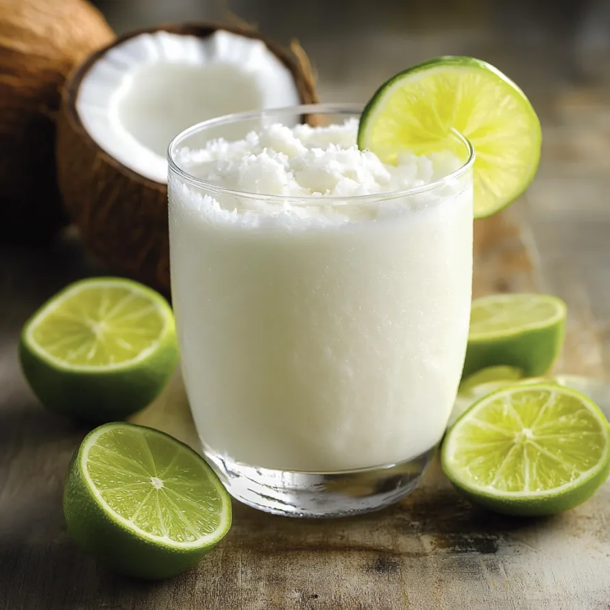

Diário de Receitas
- Receitas
- Diário
- link
A Patrona não indicou o modo de preparo desta receita, provavelmente porque ela considerou que "é muito simples e não tenho que te ensinar como fazer uma batida", então o escritor aqui irá fazer o seu melhor para indicar o modo de preparo.
Coloque todos os ingredientes no liquidificador e bata tudo até triturar o gelo e misturar bem.
Talvez ela tenha razão mesmo.
Dica sobre o coco queimado: compre coco ralado (pode ser de mercado) e toste em fogo baixo numa frigideira por 2‑3 min até dourar, se quiser, e estiver inseguro com a torra do coco, pode colocar uma colher de açúcar junto. Quando estiver pronta, espere esfriar e bata no liquidificador junto com o resto da bebida
Extra: se quiser ainda mais cremoso você pode adicionar 3 a 4 colheres de sopa de creme de leite fresco e no lugar da água, você pode substituir por água de coco.
